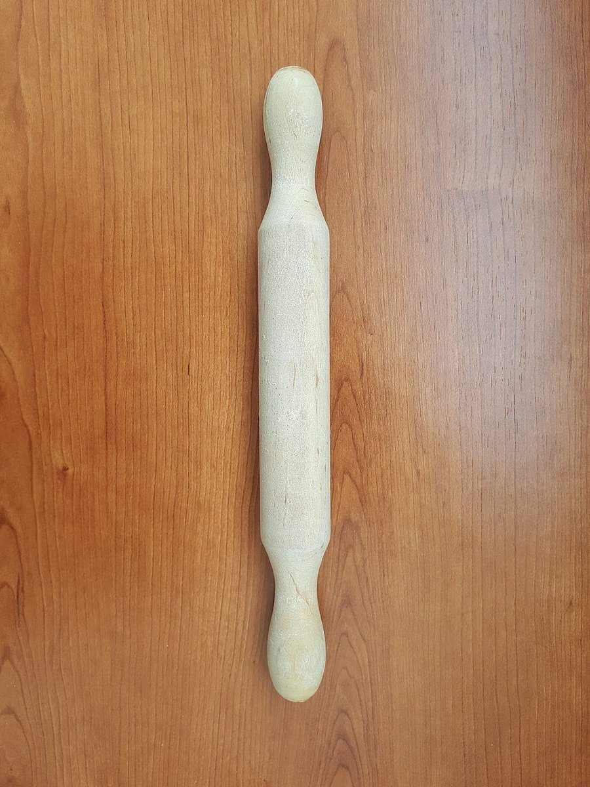
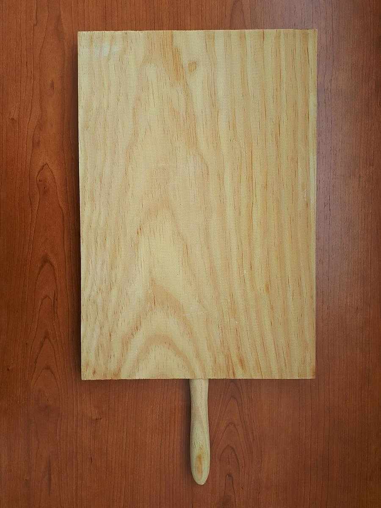

SPECIMEN No.2
店のこと
お店について確認できているのは、所在地とInstagramのアカウントだけです。
このページの「i のからだ」は、制作側が連想して書いたものです。お店の実際の様子・考え・メニューとは関係がありません。
i のからだ
小文字の i は、上に丸い点、下に縦の棒。書体によっては棒の足元に小さな横線がつきます。このサイトでは、点を「丸いもの」、棒を「細長いもの」に見立てて写真を選びました。パンづくりの道具や材料の写真ですが、お店の商品や設備ではありません。
確認できていること
お店の情報
- 店名は「I WORKS BAKERY」、業種はパン屋(ベーカリー)
- 所在地は群馬県前橋市上大島町482-1(〒379-2153)
- 電話番号はなし。連絡はInstagramから
- 営業時間・定休日・メニュー・価格・ご予約・駐車場は準備中

点と棒の置き場
丸いもの、細長いもの。
どれもフリー素材のイメージ写真です。お店で扱うものとは限りません。




